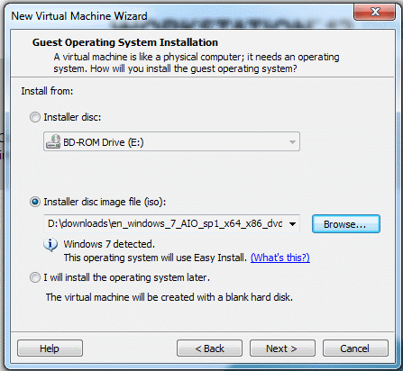
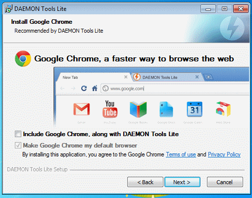
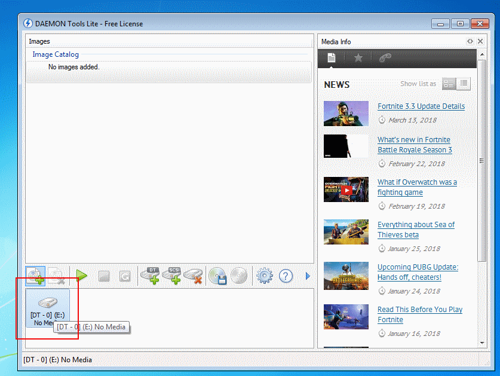

After Downloading the Necessary Programs, run the VMware workstation installer and follow the prompts. Note that you do not need the enhanced keyboard driver. Run VMWare workstation and select “Create New Virtual Machine”. Choose “Installer Disk Image File” and navigate to your Windows 7 ISO (See picture below).

VMware workstation will take a while to create the virtual machine. However starting the Virtual Machine up later is much faster.
When the Virtual Machine starts up, there will be a pop-up that says, “The keyboard hook timeout value is not set to the value recommended by VMWare workstation…”. This popup will appear each time you start your virtual machine. Each time you see it, click cancel since the “do not show this message again” checkbox doesn’t seem to work. The rest of the virtual machine setup should complete automatically though this will take a few minutes. Once your virtual machine reaches the desktop, VMWare tools will begin installing on it automatically. After the VMWare tools finish installing, the virtual machine will restart. After this the virtual machine is ready to use.
After setting up the virtual machine, the next step is to install StarCraft 2 on it. To do this you will need to copy the Blizzard app installer onto your virtual machine. To copy files to the virtual machine: on your host machine, display the file in windows explorer, then click and drag it onto the virtual machine’s desktop. Afterwards, install StarCraft 2 as you normally would. You may want to make a copy of the virtual machine after completing this step so you don't need to repeat it later. The next step is to install Daemon Tools Lite. Run the Daemon Tools Lite installer from the virtual machine and choose “free license”. Follow the prompts though if you see a screen that says, “recommended by DAEMON Tools Lite” (see picture below), there is no need to install those programs. Once the installation is finished, Daemon Tools Lite will try to update. Cancel the update process since it’s not necessary and can make Daemon Tools Lite unstable. For the next step, run Daemon Tools Lite, click the icon shown in the below graphic and choose the 3dsmax iso. This will allow 3dsmax to install.
When windows recoginzes the 3dsmax disc image, choose “Run Setup.exe” and then on the next screen click “Install products”. No changes are necessary on the “select products to install” screen. However, make a note of whether you are installing the 32 or 64 bit version of 3dsmax since you will need the same version (32 or 64 bit) of the Starcraft 2 Art Tools. On the “User and Product Information Screen”, enter whatever you want for the “Organization” field and choose “I want to try this product for 30 days”. The final step is to Extract the StarCraft 2 Art Tools archive onto your virtual machine, run the Stepup.exe contained within, and follow the prompts to install the Starcraft 2 Art Tools.
Next: Preparing the model for 3DS max via BrawlboxReturn to Index